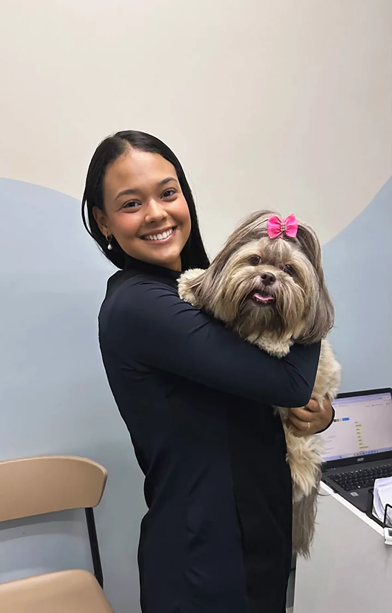
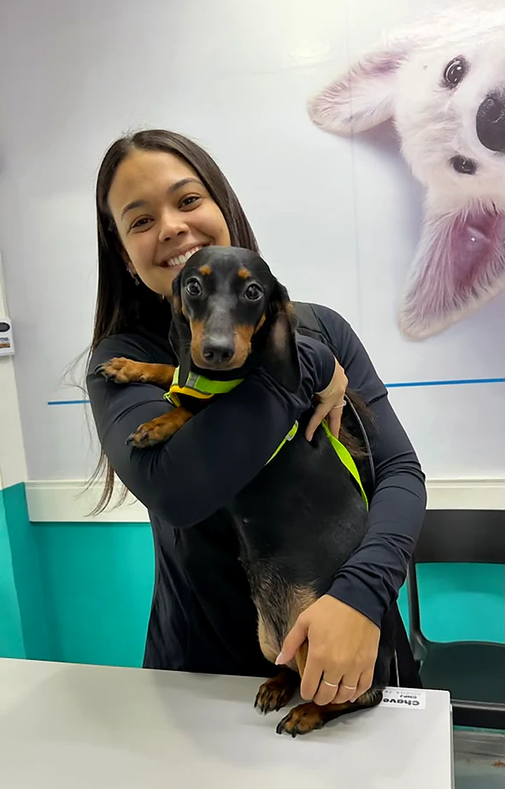

Banho e tosa
O que muda quando o banho é dentro da clínica.
Um banho, quatro cuidados. Cada número na pata é um deles.
1
A pele inteira, vista a cada banho
Quem dá o banho vê o corpo todo do seu pet, de perto.
2
O produto certo para a pele dele
Pet em tratamento toma banho com o que a dermatologia indicou.



3

3
Achou algo? A veterinária olha
Vermelhidão, pulga, nódulo ou ouvido inflamado vão direto para a Dra., no mesmo dia.
4
Calma com bicho nervoso
Pet ansioso é manejado sem pressa, por quem está acostumado.